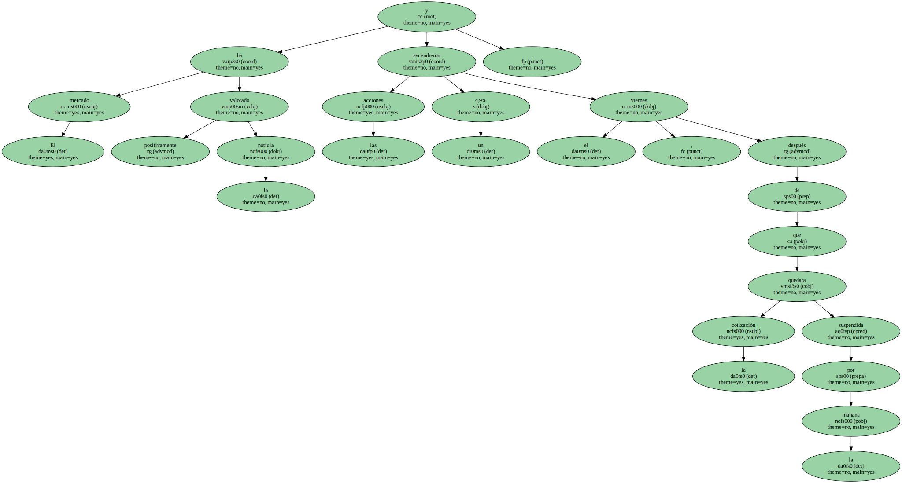

Con la adquisición de YPF , Repsol conseguirá equilibrar sus áreas de negocio , al aumentar la actividad de extracción.

El mercado ha valorado positivamente la noticia y las acciones ascendieron un 4,9% el viernes , después de que la cotización quedara suspendida por la mañana.
